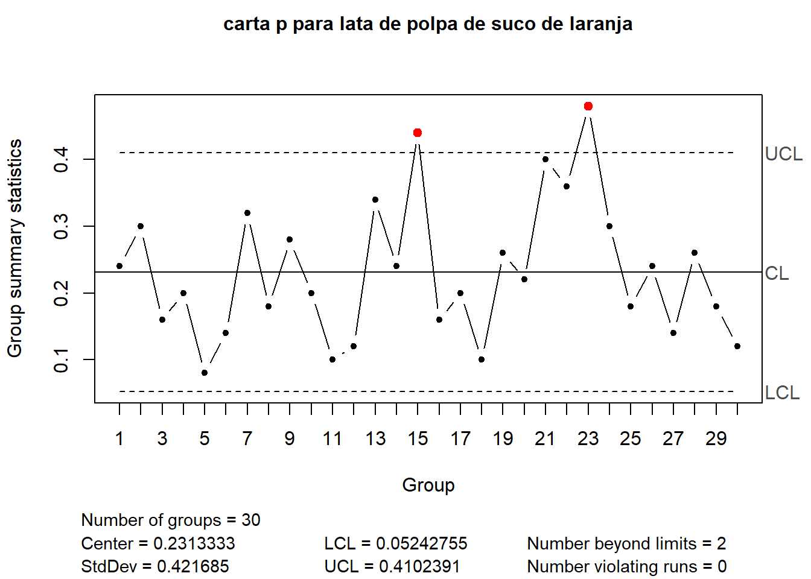
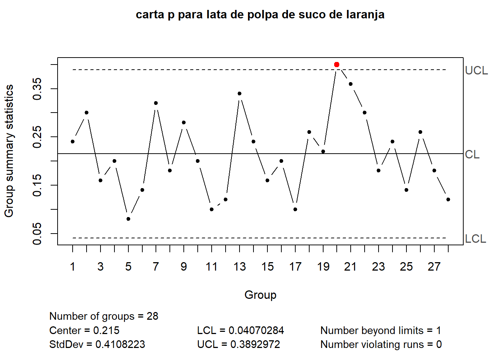
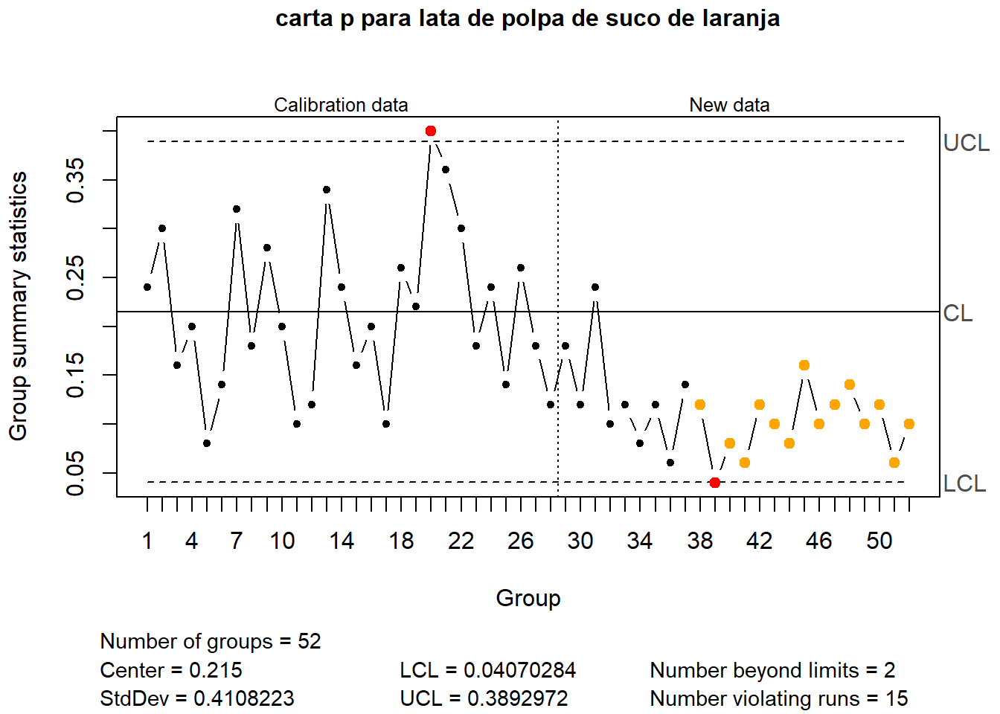
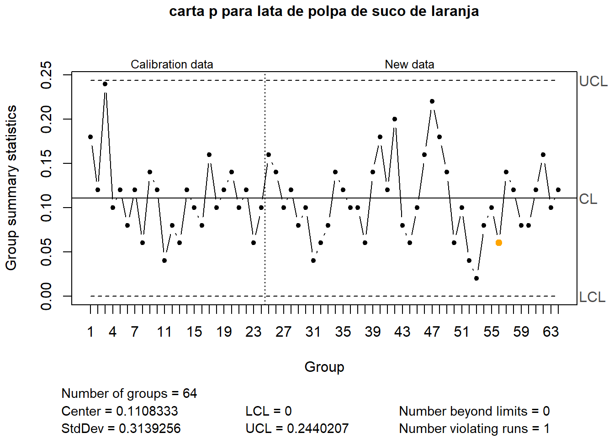

library(qcc)Package 'qcc' version 2.7Type 'citation("qcc")' for citing this R package in publications.qcc.options(bg.margin = "white")
data(orangejuice)
# ?orangejuiceMuitas características de qualidade não podem ser representadas numericamente. Por exemplo um tecido tem defeitos específicos que podem ser identificados, classificados e contados, porém geralmente não são medidos. Da mesma, forma um calçado de segurança tem características de qualidade mensuáveis que poderiam ser monitoradas via cartas para variáveis, mas tem outras que seriam apenas identificadas e contadas, por exemplo, defeitos específicos no couro da bota. Peças de estanho e materiais similares para artes sacras também tem defeitos não mensuráveis.
Em itens onde se identifica defeitos de forma qualitativa, pode-se trabalhar a inspeção classificando os itens em defeituoso ou não defeituoso (conforme ou não conforme) e também contando o número de defeitos, avaliando se este número é aceitável ou não para o produto de interesse.
A carta p é usada para monitorar a fração ou proporção de itens defeituosos ou não conformes em uma população de itens ou produtos de interesse. Os produtos são classificados como defeituosos ou não, segundo padrão, critérios e/ou especificações a serem seguidas.
A carta \(p\) é baseada na distribuição binomial, com probabilidade de \(x\) itens defeituosos em \(n\) estimada conforme segue.
\[ p(x)=\begin{pmatrix} n \\ x \end{pmatrix} p^x(1-p)^{(n-x)} \]
Para cada amostra de \(n\) itens conta-se o número de itens defeituosos \(D_i\) e calcula-se a proporção de defeituosos amostral como segue.
\[ p_i = \frac{D_i}{n} \]
Seja \(x \sim \text{Bernoulli}(p)\), ou seja, uma va que só aceita dois resultados (sucesso ou fracasso) onde:
\(x = 1\) com probabilidade \(p\),
\(x = 0\) com probabilidade \(1 - p\).
O valor esperado de \(X\) é:
\[ E[x] = \sum x_i\cdot p(x_i) = 1 \cdot p + 0 \cdot (1 - p) = p \]
Logo,
\[ \mu_p = p \]
Pela definição, a variância é:
\[ \text{Var}(X) = E[X^2] - (E[X])^2 \]
Como \(x^2 = x\) (pois \(0^2 = 0\) e \(1^2 = 1\)), temos:
\[ E[x^2] = E[x] = p \]
Portanto:
\[ \text{Var}(x) = p - p^2 = p(1 - p) \]
Logo,
\[ \sigma_p^2 = p(1 - p) \]
Considere uma amostra \(x_1, x_2, \dots, x_n\) onde cada \(x_i \sim \text{Bernoulli}(p)\).
A proporção amostral é:
\[ \hat{p} = \frac{1}{n} \sum_{i=1}^n x_i \]
Como \(E[x_i] = p\), temos:
\[ E[\hat{p}] = \frac{1}{n} \sum_{i=1}^n E[x_i] = \frac{1}{n} \cdot n p = p \]
Como os \(x_i\) são independentes e \(\text{Var}(x_i) = p(1 - p)\):
\[ \text{Var}(\hat{p}) = \text{Var}\left( \frac{1}{n} \sum_{i=1}^n x_i \right) = \frac{1}{n^2} \sum_{i=1}^n \text{Var}(x_i) = \frac{1}{n^2} \cdot n p(1 - p) \]
Logo:
\[ \text{Var}(\hat{p}) = \frac{p(1 - p)}{n} \]
\[ \begin{align} LSC =& \overline p + 3\sqrt{\frac{\overline p(1-\overline p)}{n}} \\ LC =& \overline p \\ LIC =& \overline p - 3\sqrt{\frac{\overline p(1-\overline p)}{n}} \\ \end{align} \]
Sugere-se obter \(m=\) 20 a 25 amostras de tamanho \(n\). Ao contrário das cartas para variáveis, neste caso as amostras são consideravelmente grandes. O tamanho dependerá do nível de qualidade do processo e do número esperado de itens defeituosos.
Em seguida, contar o número de itens defeituosos \(D_i\) em cada amostra e calcular a proporção de defeituosos de cada amostra, \(p_i=D_i/n\), \(i=1,\dots, m\);
A proporção média deve ser estimada como:
\[ \overline p = \frac{\sum_{i=1}^m D_i}{m\cdot n} = \frac{\sum_{i=1}^m p_i}{m} \]
O suco de laranja concentrado congelado é embalado em latas de papelão. Essas latas são formadas em uma máquina, girando-as a partir de papel cartão e anexando um painel inferior de metal. Uma lata é então inspecionada para determinar se, quando cheia, o líquido poderia vazar na costura lateral ou ao redor da junta inferior. Se isso ocorrer, uma lata é considerada não conforme. Os dados foram coletados como 30 amostras de 50 latas cada em intervalos de meia hora durante um período de três turnos em que a máquina estava em operação contínua. Da amostra 15 usada, um novo lote de papel cartão foi colocado em produção. A amostra 23 foi obtida quando um operador inexperiente foi temporariamente designado para a máquina. Após as primeiras 30 amostras, um ajuste da máquina foi feito. Em seguida, mais 24 amostras foram retiradas do processo.
library(qcc)Package 'qcc' version 2.7Type 'citation("qcc")' for citing this R package in publications.qcc.options(bg.margin = "white")
data(orangejuice)
# ?orangejuiceorangejuice30 <- orangejuice[1:30,2:3]
q1 = qcc(orangejuice30$D,
orangejuice30$size,
type="p",
title = "carta p para lata de polpa de suco de laranja")
Uma vez que há causas atribuíveis às amostras 15 e 23, pode-se removê-las e reestimar os limites de controle. A amostra 20 apresentou um pequeno desvio, o qual não há causa atribuível e, logo, está será mantida.
q2 = qcc(orangejuice30$D[-c(15,23)],
orangejuice30$size[-c(15,23)],
type="p",
title = "carta p para lata de polpa de suco de laranja")
Controlando a produção futura das novas amostras. As amostras da segunda fase apresentam proporção de defeituosos menor. Neste tipo de cartta, um desvio para abaixo do limite inferior de controle nem sempre é considerado ruim, pois indica uma proporção de defeituosos menor que o esperado. A explicação para uma proporção de não conformes mais baixa na segunda fase é que foram realizados ajustes na máquina. Logo, sugere-se estimar novos limites de controle.
orangejuice_sec <- orangejuice[31:54,2:3]
q3 = qcc(orangejuice30$D[-c(15,23)],
orangejuice30$size[-c(15,23)],
type="p",
newdata = orangejuice_sec$D,
newsizes = orangejuice_sec$size,
title = "carta p para lata de polpa de suco de laranja")
O seguinte conjunto dados tem observações após ajustes realizados na máquina. Neste caso considerou-se 24 amostras para primeira fase, ou estimativa dos limites de controle.
data(orangejuice2)
orangejuice24 <- orangejuice2[1:24,2:3]
orangejuice_sec2 <- orangejuice2[25:64,2:3]
q4 = qcc(orangejuice24$D,
orangejuice24$size,
type="p",
newdata = orangejuice_sec2$D,
newsizes = orangejuice_sec2$size,
title = "carta p para lata de polpa de suco de laranja")